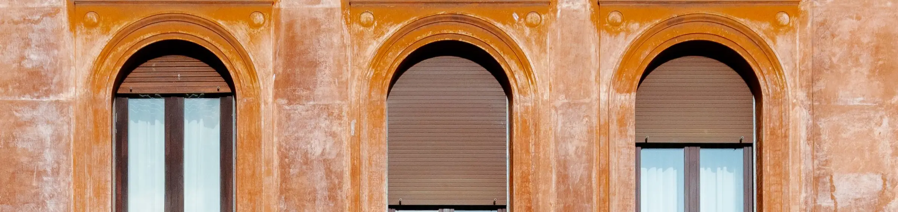

Fiche de lot — inscription 2026 Site de démonstration
104, rue del’Ardoisière

- Superficie · m²
- 412
- Logements · étages
- 6 · 3
- Année de construction
- 1929
- Numéro de lot
- 4 782 106
Fiche de lot — inscription 2026 Site de démonstration
